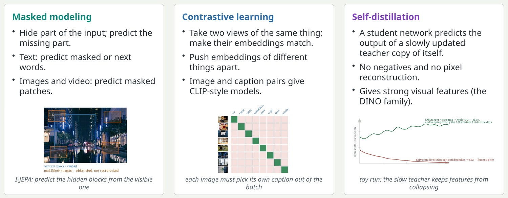
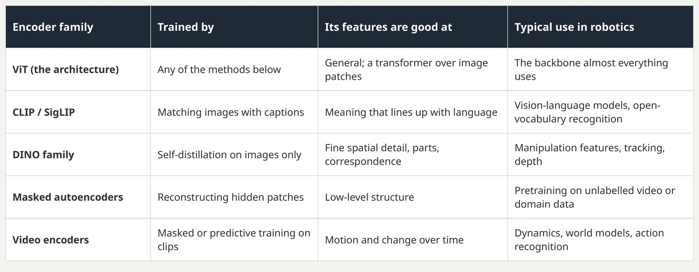
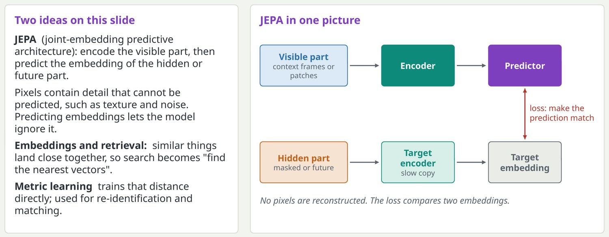

Self-supervised learning: labels made from the data itself
The model learns useful features by solving a task we can generate automatically, with no human labels.

The common thread: invent a prediction problem where the answer is already in the data. Masked modeling is how language models and masked autoencoders train. Contrastive learning needs pairs; CLIP uses hundreds of millions of image and caption pairs from the web. Self-distillation sounds circular, but the teacher is an average of past student weights and sees a different view of the image, which is enough to learn good features.
Key pointSelf-supervision is why models can train on billions of images and hours of video.
Vision encoders: the eyes of every modern system
A vision encoder turns an image into a set of feature vectors that other models consume.

Many current vision-language-action models feed two encoders at once: a language-aligned one such as SigLIP for semantics and a DINO-style one for spatial precision. This is a practical example of choosing features for the job. ViT is not a training method; it is the transformer architecture applied to image patches.
Key pointChoose the encoder by what the features must capture: meaning in words, or geometry and detail.
Predicting in feature space: JEPA and embeddings
Instead of predicting every pixel, predict the representation of what is missing or what comes next.

JEPA is associated with Yann LeCun's group; I-JEPA for images and V-JEPA for video. The argument: a model forced to predict pixels wastes capacity on detail that does not matter for decisions. For robots this is attractive because what matters is where objects will be, not the exact texture of the table. Embedding retrieval is how product search, face matching and warehouse item identification work.
Key pointGood embeddings turn hard problems into nearest-neighbour lookups.